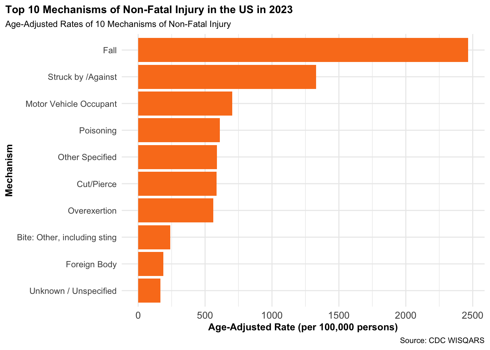
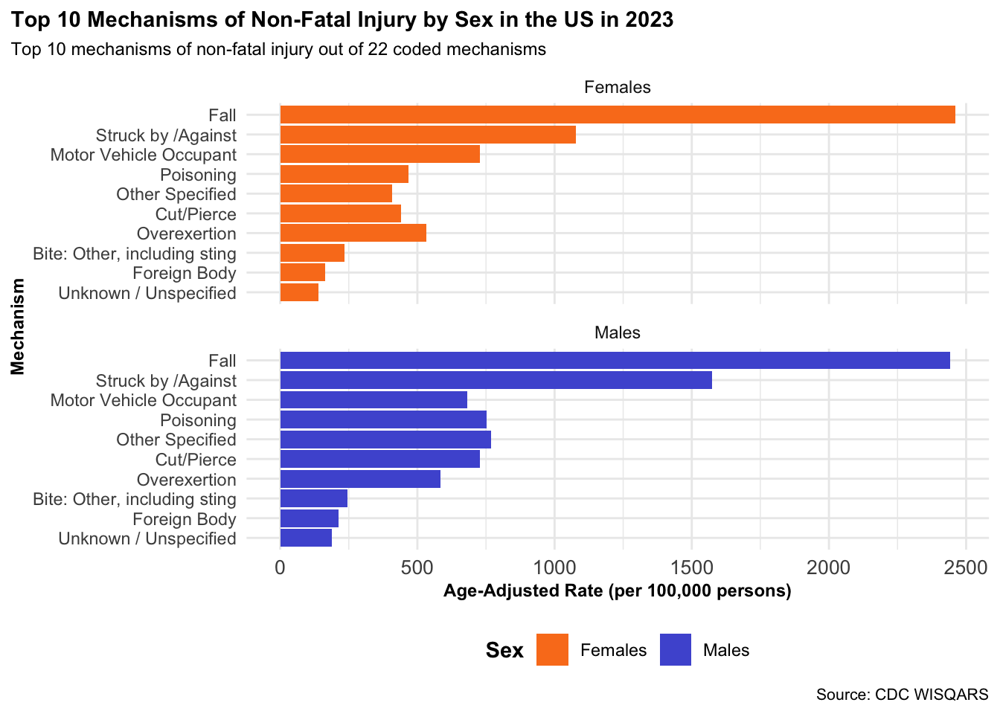
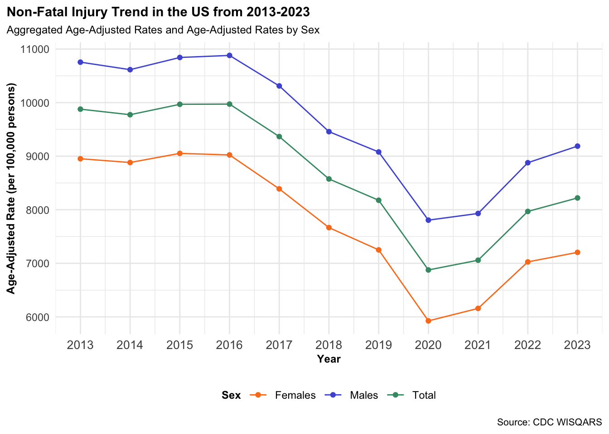

library(readr)
library(tidyverse)
library(dplyr)
library(forcats)Example Analysis
Non-Fatal Injuries Over Time
TipNon-Fatal Injury Definition
Bodily harm resulting from severe exposure to an external force or substance (mechanical, thermal, electrical, chemical, or radiant) or a submersion. This bodily harm can be unintentional, or violence related. (National Center for Injury Prevention and Control (2025))
This analysis uses data from the CDC Web-based Injury Statistics Query and Reporting System (WISQARS) (National Center for Injury Prevention and Control 2025) on the number of cases associated with various mechanisms of non-fatal injuries from 2013-2023. The audience for this analysis are students, researchers, and those who are interested in understanding the magnitude of the health burden of non-fatal injuries in the United States. The WISQARS dashboard and data repository combines data collected from the National Center for Health Statistics, U.S. Census Bureau, and National Electronic Injury Surveillance System-All Injury Program.

NoteWISQARS Data Sources
- Non-fatal injury data from the WISQARS module is from the National Electronic Injury Surveillance System-All Injury Program (NEISS-AIP) operated by the U.S. Consumer Product Safety Commission (2025)
- Population estimates are produced by the U.S. Census Bureau
Data Dictionaries
Sex-Specific Nonfatal Emergency Department Visits and Rates per 100,000 by Mechanism
| Variable | Description | Type |
|---|---|---|
| Sex | Sex, coded as Females, Males or Unknown | Categorical |
| Mechanism | Underlying cause of non-fatal injury; action that starts the injury event 22 different categories | Categorical |
| Estimated number | Estimated number of non-fatal injury cases in the population in 2023 | Numeric |
| Population | Size of population in 2023; data from the U.S. Census Bureau | Numeric |
| Crude rate | Estimated number / Population * 100,000 | Numeric |
| Age-adjusted rate | Rate adjusted for age distribution | Numeric |
Nonfatal Emergency Department Visits and Rates per 100,000 in 2023 by Mechanism
| Variable | Description | Type |
|---|---|---|
| Mechanism | Underlying cause of non-fatal injury; action that starts the injury event 22 different categories | Categorical |
| Estimated Number | Estimated number of non-fatal injury cases in the population in 2023 | Numeric |
| Population | Size of population in 2023, data from the U.S. Census Bureau | Numeric |
| Crude Rate | Estimated number / Population * 100,000 | Numeric |
| Age-Adjusted Rate | Crude rate, adjusted for age distribution | Numeric |
Nonfatal Emergency Department Visits and Rates per 100,000 from 2013-2023
| Variable | Description | Type |
|---|---|---|
| Year | Year (2013 - 2023) | Numeric |
| Estimated Number | Estimated number of non-fatal injury cases in the population | Numeric |
| Population | Size of population in specific year, data from the U.S. Census Bureau | Numeric |
| Crude Rate | Estimated number / Population * 100,000 | Numeric |
| Age-Adjusted Rate | Crude rate, adjusted for age distribution | Numeric |
Sex-Specific Nonfatal Emergency Department Visits and Rates per 100,000 from 2013-2023
| Variable | Description | Type |
|---|---|---|
| Year | Year (2013-2023) | Numeric |
| Sex | Sex, coded as Females, Males or Unknown | Factor |
| Estimated Number | Estimated number of non-fatal injury cases in the population | Numeric |
| Population | Size of population in specific year, data from the U.S. Census Bureau | Numeric |
| Crude Rate | Estimated number / Population * 100,000 | Numeric |
| Age-Adjusted Rate | Crude rate, adjusted for age distribution | Numeric |
Important
The CDC does not recommend using non-fatal firearm injury prevalence estimates at this time. There is a lack of precision for these estimates due to small sample sizes, and the fact that there is no current system that systematically collects data on firearm non-fatal injuries.
Questions of interest
- What were the top 10 mechanisms of non-fatal injury in 2023?
- How does the top 10 mechanisms of non-fatal injury differ by gender in 2023?
- What is the trend in non-fatal injuries cases from 2013-2023? How does it differ by sex?
Setting up R Environment
Loading packages
Loading data
cases_sex <- read_csv("reports-data-export.csv")
total_mech <- read_csv("total_case.csv")
sex_year <- read_csv("case_year.csv")
total_year <- read_csv("total_case_year.csv")Data Wrangling
Before starting data analysis and data visualization, data wrangling is required to ensure that the datasets are in the desired format for better readability and analysis. This includes converting variables into the appropriate type (e.g, factor, numeric, string), merging, and removing rows/columns.
Cleaning Cases Data
#converting categorical variables to factors, continuous rates to numeric variables, and removing columns that will not be used in the analysis, removing rows that are comment lines, and Sex = Unknown
cl_cases_sex <- cases_sex %>%
slice(-c(66:87)) %>%
filter(Sex != "Unknown") %>%
mutate(
Sex = as.factor(Sex),
Mechanism = as.factor(Mechanism),
across(
c(`Estimated Number`, Population, `Crude Rate`, `Age-Adjusted Rate`),
~ as.numeric(str_remove_all(.x, ","))
)
) %>%
select(
-c(`Cases (Sample)`, `Standard Error`, CV, `Lower 95% CI`, `Upper 95% CI`)
)Cleaning Total Cases by Mechanism Data
cl_total_mech <- total_mech %>%
select(
-c(`Cases (Sample)`, `Standard Error`, CV, `Lower 95% CI`, `Upper 95% CI`)
) %>%
slice(-c(23:44))Cleaning Total Cases by Year & Sex Data
cl_sex_year <- sex_year %>%
slice(-c(34:55)) %>%
filter(Sex != "Unknown") %>%
mutate(
Sex = as.factor(Sex),
Year = as.integer(Year),
across(
c(`Estimated Number`, Population, `Crude Rate`, `Age-Adjusted Rate`),
~ as.numeric(str_remove_all(.x, ","))
)
) %>%
select(
-c(`Cases (Sample)`, `Standard Error`, CV, `Lower 95% CI`, `Upper 95% CI`)
)Cleaning Total Cases by Year Data
cl_total_year <- total_year %>%
slice(-c(12:33)) %>%
mutate(
Year = as.integer(Year)
) %>%
select(
-c(`Cases (Sample)`, `Standard Error`, CV, `Lower 95% CI`, `Upper 95% CI`)
)Appending Total Cases by Year to Case by Year and Sex Data
cl_total_year <- cl_total_year %>%
mutate(Sex = factor("Total"))
cl_case_year <- bind_rows(cl_sex_year, cl_total_year)Data Analysis
Question 1: Which mechanisms of non-fatal injury were the most common in 2023?
This code uses dplyr and ggplot2 functions to create a bar graph displaying the top 10 most common mechanisms of non-fatal injury in 2023.
cl_total_mech %>%
arrange(desc(`Age-Adjusted Rate`)) %>%
slice(1:10) %>%
ggplot(
mapping = aes(
x = `Age-Adjusted Rate`,
y = fct_reorder(Mechanism, `Age-Adjusted Rate`)
)
) +
geom_col(fill = "#fa7e1e") +
labs(
title = "Top 10 Mechanisms of Non-Fatal Injury in the US in 2023",
subtitle = "",
caption = "Source: CDC WISQARS",
y = "Mechanism",
x = "Age-Adjusted Rate (per 100,000 persons)"
) +
theme_minimal() +
theme(
axis.text.x = element_text(size = 10),
axis.title.x = element_text(size = 10, face = "bold"),
axis.title.y = element_text(size = 10, face = "bold"),
plot.title = element_text(size = 11, face = "bold"),
plot.title.position = "plot",
plot.subtitle = element_text(size = 9),
legend.title = element_text(face = "bold"),
legend.position = "bottom",
plot.caption = element_text(size = 8)
)
Question 2: How does the mechanism of non-fatal injury differ by gender in 2023?
This code uses dplyr and ggplot2 functions to examine the top 10 mechanisms of non-fatal injury by sex in 2023.
cl_cases_sex %>%
group_by(Sex) %>%
slice_max(order_by = `Age-Adjusted Rate`, n = 10) %>% #new function I looked up to get the top 10 mechanism by Sex
ungroup() %>%
ggplot(
mapping = aes(
x = `Age-Adjusted Rate`,
y = fct_reorder(Mechanism, `Age-Adjusted Rate`),
fill = Sex
)
) +
geom_col() +
facet_wrap(~Sex, nrow = 2, scales = "free_y") +
labs(
title = "Top 10 Mechanisms of Non-Fatal Injury by Sex in the US in 2023",
subtitle = "Top 10 mechanisms of non-fatal injury out of 22 coded mechanisms",
caption = "Source: CDC WISQARS",
y = "Mechanism",
x = "Age-Adjusted Rate (per 100,000 persons)"
) +
scale_fill_manual(
values = c(
"Males" = "#4f5bd5",
"Females" = "#fa7e1e"
)
) +
theme_minimal() +
theme(
axis.text.x = element_text(size = 10),
axis.title.x = element_text(size = 9, face = "bold"),
axis.title.y = element_text(size = 9, face = "bold"),
plot.title = element_text(size = 11, face = "bold"),
plot.title.position = "plot",
plot.subtitle = element_text(size = 9),
legend.title = element_text(face = "bold"),
legend.position = "bottom",
plot.caption = element_text(size = 8)
)
Question 3: What is the trend of cases of non-fatal injuries between 2013-2023? How does it differ by sex?
This code uses ggplot2 to look at the trends in non-fatal injuries from 2013-2023, between males, females, and for all sexes.
ggplot(
cl_case_year,
mapping = aes(x = Year, y = `Age-Adjusted Rate`, color = Sex)
) +
geom_point() +
geom_line() +
labs(
title = "Non-Fatal Injury Trend in the US from 2013-2023",
subtitle = "Age-adjusted rates by sex and total population",
caption = "Source: CDC WISQARS",
y = 'Age-Adjusted Rate (per 100,000 persons)'
) +
scale_color_manual(
values = c(
"Males" = "#4f5bd5",
"Females" = "#fa7e1e",
"Total" = "#419873"
)
) +
scale_x_continuous(
breaks = seq(min(cl_case_year$Year), max(cl_case_year$Year), by = 1)
) +
theme_minimal() +
theme(
axis.text.x = element_text(size = 10),
axis.title.x = element_text(size = 9, face = "bold"),
axis.title.y = element_text(size = 9, face = "bold"),
plot.title = element_text(size = 11, face = "bold"),
plot.title.position = "plot",
plot.subtitle = element_text(size = 9),
legend.title = element_text(size = 9, face = "bold"),
legend.position = "bottom",
plot.caption = element_text(size = 8)
)
Results
The purpose of this data analysis was to understand the scope of non-fatal injuries in the United States. This was done by examining the top 10 most common mechanisms by sex, and in the overall population, as well as looking at the trends in non-fatal injuries over time (from 2013-2023).
The top 10 most common mechanisms for non-fatal injury in general, and by sex were the same:
- Falls
- Struck by/ Against
- Motor Vehicle Occupant
- Poisoning
- Other Specified
- Cut/Pierce
- Overexertion
- Bite: Other/including sting
- Foreign Body
- Unknown/Unspecified
Falls, were by far, the most common mechanism for non-fatal injuries. The least common mechanism for non-fatal injuries was by a BB/pellet gun.
From 2013-2020, the age-adjusted rates for non-fatal injuries in the US has been declining, irregardless of sex. However, males contributed to a higher proportion of non-fatal injuries compared to females at all years (2013-2023). The lowest age-adjusted rate was in 2020, which could be attributed to quarantine procedures during the COVID-19 pandemic, restricting mobility and interaction between individuals. Between 2021 to 2023, the age-adjusted rates for non-fatal injuries have been increasing.
There are several limitations of this data analysis. Firstly, the removal of the sex category “unknown”. There are numerous missing values associated with the sex category “unknown”, and so this category was removed for the purposes of this analysis. Additionally, mechanisms that were described as “Unknown/unspecified cause” were unable to be further elucidated. The latest data for year 2024 has not yet been made available, so the trend for 2024 cannot be determined.
Currently, WISQARs data for non-fatal injuries is not available at the state and county level, due to low statistical power. Future analyses should focus on economic costs associated with different mechanisms of non-fatal injuries (are there any causes of non-fatal injury that have high economic costs but relatively low prevalence, or vice versa?), and the spatial distribution of non-fatal injuries by geographic region in the United States.
TipMechanism Definitions
If you are interested in reading about how each mechanism was defined, check out National Center for Injury Prevention and Control (2025)
Functions Used
| ggplot2 | dplyr | forcats | read_r | string_r |
|---|---|---|---|---|
select() |
geom_col() |
fct_reorder() |
read_csv() |
str_remove_all() |
mutate() |
geom_line() |
|||
filter() |
geom_point() |
|||
arrange() |
labs() |
|||
slice() |
facet_wrap() |
|||
group_by() |
theme() |
|||
ungroup() |
aes() |
|||
across() |
R Session Information
options(width = 120)
sessioninfo::session_info()─ Session info ───────────────────────────────────────────────────────────────────────────────────────────────────────
setting value
version R version 4.5.1 (2025-06-13)
os macOS Sequoia 15.6.1
system aarch64, darwin20
ui X11
language (EN)
collate en_US.UTF-8
ctype en_US.UTF-8
tz America/New_York
date 2025-11-06
pandoc 3.6.3 @ /Applications/Positron.app/Contents/Resources/app/quarto/bin/tools/aarch64/ (via rmarkdown)
quarto 1.8.25 @ /Applications/quarto/bin/quarto
─ Packages ───────────────────────────────────────────────────────────────────────────────────────────────────────────
package * version date (UTC) lib source
bit 4.6.0 2025-03-06 [1] CRAN (R 4.5.0)
bit64 4.6.0-1 2025-01-16 [1] CRAN (R 4.5.0)
cli 3.6.5 2025-04-23 [1] CRAN (R 4.5.0)
crayon 1.5.3 2024-06-20 [1] CRAN (R 4.5.0)
digest 0.6.37 2024-08-19 [1] CRAN (R 4.5.0)
dplyr * 1.1.4 2023-11-17 [1] CRAN (R 4.5.0)
evaluate 1.0.4 2025-06-18 [1] CRAN (R 4.5.0)
farver 2.1.2 2024-05-13 [1] CRAN (R 4.5.0)
fastmap 1.2.0 2024-05-15 [1] CRAN (R 4.5.0)
forcats * 1.0.0 2023-01-29 [1] CRAN (R 4.5.0)
generics 0.1.4 2025-05-09 [1] CRAN (R 4.5.0)
ggplot2 * 4.0.0 2025-09-11 [1] CRAN (R 4.5.0)
glue 1.8.0 2024-09-30 [1] CRAN (R 4.5.0)
gtable 0.3.6 2024-10-25 [1] CRAN (R 4.5.0)
hms 1.1.3 2023-03-21 [1] CRAN (R 4.5.0)
htmltools 0.5.8.1 2024-04-04 [1] CRAN (R 4.5.0)
htmlwidgets 1.6.4 2023-12-06 [1] CRAN (R 4.5.0)
jsonlite 2.0.0 2025-03-27 [1] CRAN (R 4.5.0)
knitr 1.50 2025-03-16 [1] CRAN (R 4.5.0)
labeling 0.4.3 2023-08-29 [1] CRAN (R 4.5.0)
lifecycle 1.0.4 2023-11-07 [1] CRAN (R 4.5.0)
lubridate * 1.9.4 2024-12-08 [1] CRAN (R 4.5.0)
magrittr 2.0.3 2022-03-30 [1] CRAN (R 4.5.0)
pillar 1.11.0 2025-07-04 [1] CRAN (R 4.5.0)
pkgconfig 2.0.3 2019-09-22 [1] CRAN (R 4.5.0)
purrr * 1.1.0 2025-07-10 [1] CRAN (R 4.5.0)
R6 2.6.1 2025-02-15 [1] CRAN (R 4.5.0)
RColorBrewer 1.1-3 2022-04-03 [1] CRAN (R 4.5.0)
readr * 2.1.5 2024-01-10 [1] CRAN (R 4.5.0)
rlang 1.1.6 2025-04-11 [1] CRAN (R 4.5.0)
rmarkdown 2.29 2024-11-04 [1] CRAN (R 4.5.0)
S7 0.2.0 2024-11-07 [1] CRAN (R 4.5.0)
scales 1.4.0 2025-04-24 [1] CRAN (R 4.5.0)
sessioninfo 1.2.3 2025-02-05 [1] CRAN (R 4.5.0)
stringi 1.8.7 2025-03-27 [1] CRAN (R 4.5.0)
stringr * 1.5.2 2025-09-08 [1] CRAN (R 4.5.0)
tibble * 3.3.0 2025-06-08 [1] CRAN (R 4.5.0)
tidyr * 1.3.1 2024-01-24 [1] CRAN (R 4.5.0)
tidyselect 1.2.1 2024-03-11 [1] CRAN (R 4.5.0)
tidyverse * 2.0.0 2023-02-22 [1] CRAN (R 4.5.0)
timechange 0.3.0 2024-01-18 [1] CRAN (R 4.5.0)
tzdb 0.5.0 2025-03-15 [1] CRAN (R 4.5.0)
vctrs 0.6.5 2023-12-01 [1] CRAN (R 4.5.0)
vroom 1.6.5 2023-12-05 [1] CRAN (R 4.5.0)
withr 3.0.2 2024-10-28 [1] CRAN (R 4.5.0)
xfun 0.53 2025-08-19 [1] CRAN (R 4.5.0)
yaml 2.3.10 2024-07-26 [1] CRAN (R 4.5.0)
[1] /Library/Frameworks/R.framework/Versions/4.5-arm64/Resources/library
* ── Packages attached to the search path.
──────────────────────────────────────────────────────────────────────────────────────────────────────────────────────References
Campaign for Public Health Alliance. 2011. “Injury Prevention.” Safe States. https://www.safestates.org/resource/resmgr/Images/CPH_Injury_front_final.jpg.
National Center for Injury Prevention and Control. 2025. “CDC Web-Based Injury Statistics Query and Reporting System.” Centers for Disease Control and Prevention. https://wisqars.cdc.gov/.
U.S. Consumer Product Safety Commission. 2025. “National Electronic Injury Surveillance System - All Injury Program.” Healthy People 2030. https://odphp.health.gov/healthypeople/objectives-and-data/data-sources-and-methods/data-sources/national-electronic-injury-surveillance-system-all-injury-program-neiss-aip.